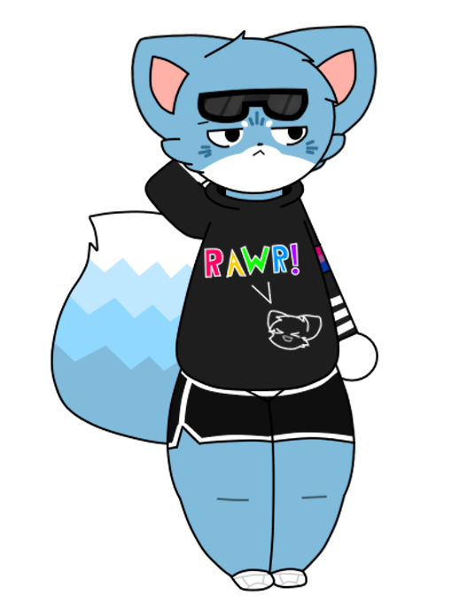

manitowoc
basic info
Gender: Male
Height: 6'0
Weight: 192 lbs
Sexuality: Bisexual
biography
Manitowoc is a blue fox (not to be confused with Poi, who oddly enough has a similar design). He wears some black goggles which are always raised (he likes it that way), a black hoodie with a text that says "RAWR!" and a picture of a furry's head, and some dolphin shorts, as well as a armband with the bisexual flag on it. Almost on a daily basis, he goes to fight with other people on a so called "Item Asylum", which a lot of people from there seem to hate him, but Manitowoc himself doesn't mind (he's cool like that). Also he's a god gamer (he WILL destroy you in any game, no really!). Also he loves the 2000s and 2010s nostalgia as well as emo/scene type stuff.
Fun fact: Manitowoc is also my Roblox avatar!